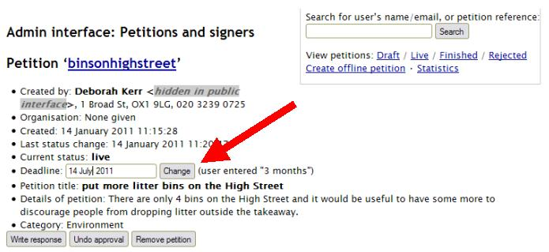

To change the deadline of a petition
Petition creators are asked to specify how long they wish their petition to be open for, and this date is calculated from when the petition is approved rather than when it was created.
You may need to manually alter the date on which a petition will close – this is usually at the request of the petition creator, but you might want to close the petition early in order to coincide with a council deadline (e.g. you know that the issue will be debated on a certain date).
To change the date of a petition, simply go to the admin page for that petition, type the new date into the ‘Deadline’ box and click the ‘Change’ button:
This will automatically update the deadline shown on the live site.